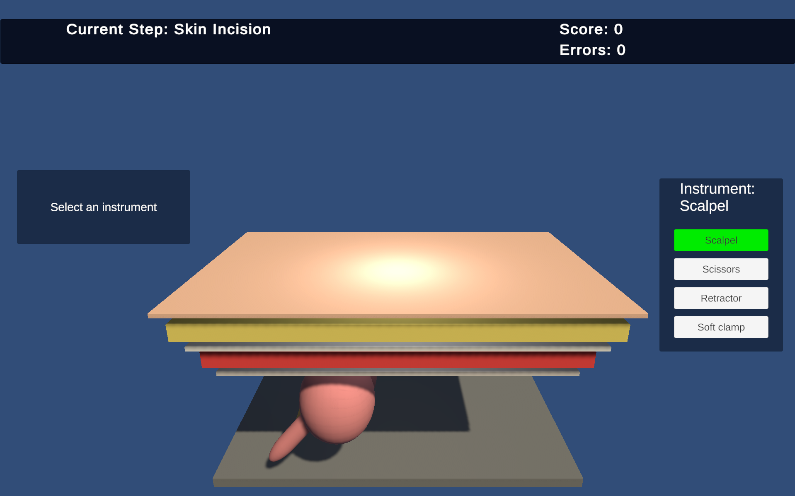
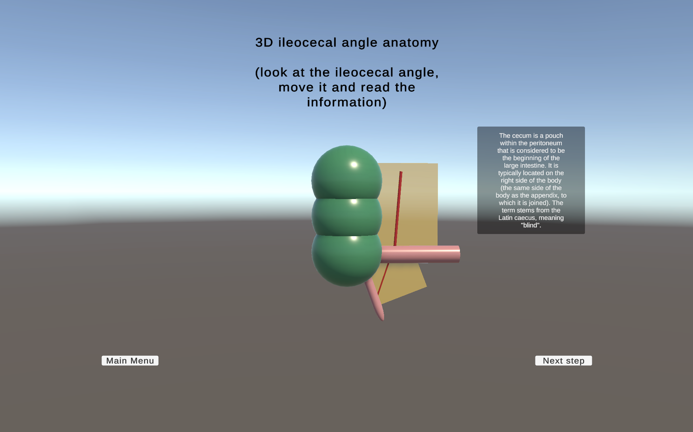
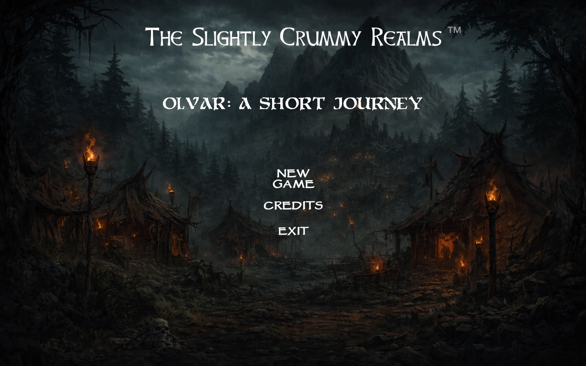

Medical Simulation Developer · Unity & C# · Medical XR
Nikolai Suhhanov
Former General Surgeon · 8+ years of clinical experience
I combine over eight years of clinical surgical experience with independent Unity and C# development to build practical medical education and surgical simulation prototypes.
NS
About Me
Clinical experience meets medical simulation
I am a Medical Simulation Developer with over eight years of clinical experience as a General Surgeon, currently combining my medical background with software development using Unity and C#.
My surgical experience gives me a practical understanding of anatomy, surgical workflows, operating room procedures, and the challenges medical students and young surgeons face during their training. After years of performing abdominal surgery, I decided to explore how interactive applications and simulation can contribute to surgical education.
I am studying Web Technologies at the Estonian Entrepreneurship University of Applied Sciences / EEK Mainor while independently developing medical education applications and surgical simulation prototypes. My current focus is Medical XR, surgical simulation, and interactive medical education.
My portfolio includes a theoretical appendectomy learning application, a practical 3D appendectomy simulator, an XR Adhesiolysis Trainer with a completed desktop MVP and XR adaptation in progress, and a completed 2D platformer.
In the future, I aim to expand my knowledge of medical imaging, DICOM, surgical visualization, planning, and image-guided navigation. I am open to Medical Simulation Developer, Unity Developer, and Medical XR Developer opportunities, including remote roles and relocation.
Featured Work
Projects
Interactive applications combining medical knowledge, software development and 2D/3D technologies.
Medical XR · Unity 3D
XR Adhesiolysis Trainer
In Development
A surgical training prototype focused on intestinal adhesion separation. Its desktop MVP is complete; adaptation to XR using Unity XR Interaction Toolkit is in progress. The prototype includes grasper and scissors interactions, intestinal manipulation, adhesion tension mechanics, visual feedback, and interactive cutting.
Unity
C#
XR Interaction Toolkit
3D
Prototype
Desktop MVP complete · XR adaptation in progress

Medical Simulation · Unity 3D
Appendectomy Training — Practical Simulator
An interactive Unity-based simulator demonstrating the initial stages of traditional open appendectomy. It includes instrument selection, procedural steps, visual feedback and performance evaluation.
Unity
C#
3D
Windows
Android

Medical Education · Unity
Appendectomy Training — Theoretical Module
A cross-platform educational application for learning appendix anatomy, surgical instruments, operative access and basic knowledge assessment.
Unity
C#
3D Anatomy
Windows
Android

2D Game · WebGL
Olvar: A Short Journey
A completed 2D platformer featuring three levels, enemies, boss encounters, dialogues, health and time systems, menus and WebGL deployment.
Unity
C#
2D
WebGL
Windows
Supporting Materials
Documents
Selected professional documents, medical credentials, English translations and recommendation letters are available below.
Curriculum Vitae
Professional experience, technical skills, education and project links.
View PDF →Motivation Letter
My transition from surgery into Medical Technology and long-term professional goals.
View PDF →Commercial Development Vision
A theoretical plan for developing the appendectomy training project into a commercial product.
View PDF →Education and Medical Experience
A summary of medical education, qualifications and clinical experience.
View PDF →Medical Credentials
Original medical documents and their English translations.
Medical Education
Doctor of Medicine Diploma
Saint Petersburg State Pediatric Medical University.
Postgraduate Training
General Surgery Internship
Postgraduate clinical training in general surgery.
Postgraduate Training
Medical Residency
Medical residency and specialist training documentation.
Professional Qualification
Medical Oncology Diploma
Additional professional qualification in medical oncology.
References & Recommendations
Professional references from my medical, academic and current employment background.
Medical Reference
Professional Characteristic from Hospital
A professional reference describing my clinical work, responsibilities and experience as a surgeon.
View PDF →Academic Reference
Letter of Recommendation from University
An academic recommendation related to my Web Technologies studies, motivation and professional development.
View PDF →Employment Reference
Letter of Recommendation from Current Employer
A professional recommendation describing reliability, teamwork and performance in my current workplace.
View PDF →Contacts
Let’s build better medical technology
I am open to opportunities as a Medical Simulation Developer, Unity Developer, or Medical XR Developer, including remote positions and relocation.